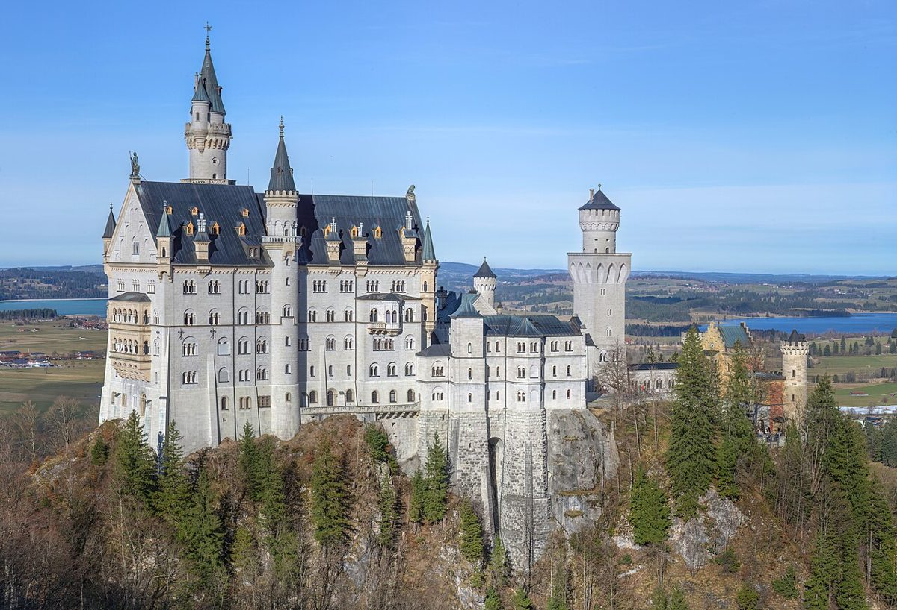

Majestätsch auf Bayrisch: Neuschwanstein entdecken

Neuschwanstein: Mehr als nur ein Märchenschloss
König Ludwig II. baute es als Flucht vor der Realität – heute ist Neuschwanstein eines der meistfotografierten Bauwerke der Welt. Eingebettet in die bayerischen Alpen wirkt es wie aus einem Bilderbuch, doch das Schloss hat viel mehr zu bieten als nur hübsche Fassaden.
Anreise: So kommst du stressfrei hin
Die meisten Besucher starten von München aus: Mit dem Auto dauert die Fahrt etwa 1,5 Stunden Richtung Füssen. Die romantische Alternative ist die Bahn bis Füssen, von wo aus Busse direkt zum Schloss pendeln. Parkplätze gibt es unterhalb des Berges in Hohenschwangau – von dort führt ein 30-minütiger Fußweg (steil!) hinauf oder bequemer mit der Pferdekutsche.
Wann lohnt sich der Besuch am meisten?
Frühling bis Herbst bietet die schönsten Farben, aber auch die meisten Touristen. Wer Menschenmassen meiden will, kommt idealerweise:
* Mitte September bis Oktober (Nachsaison, Herbstfarben)
* Unter der Woche, möglichst früh morgens
* Im Winter (weniger los, aber eingeschränkte Öffnungen)
3 Geheimtipps abseits der Schloss-Tour
- Marienbrücke: Der berühmte Fotospot mit Schlossblick – geht weiter den Berg hinauf für einsamere Perspektiven
- Alpsee: Der türkisfarbene See unterhalb des Schlosses lädt zu einer ruhigen Bootsfahrt ein
- Hohenschwangau: Ludwigs Jugend-Schloss nebenan erzählt die Vorgeschichte
Typisch Bayerisch: Essen wie ein König
In Hohenschwangau findest du mehrere Gasthäuser mit traditioneller Küche:
- Käsespätzle mit Röstzwiebeln (Hausgemachte Nudeln mit geschmolzenem Käse)
- Obazda (Würziger Käse-Dip mit Brezel)
- Kaiserschmarrn (Süßer, zerrissener Pfannkuchen mit Apfelmus)
Gut zu wissen
Tickets für Innenführungen nur im Ticketcenter Hohenschwangau erhältlich – nicht am Schloss selbst! Fotografieren innen verboten. Die Umgebung lädt zum Wandern ein – feste Schuhe empfehlenswert.
Haiktec
- Prüfungsvorbereitungs-Budget & Lernfortschritt Tracker
- 7 Erfolgsstrategien für kleine Restaurants und Cafés: Mehr Gäste, mehr Umsatz
- Ultimate Schwarzwald Reisebudget- & Aktivitäten-Tracker für internationale Gäste
Text mit KI erstellt und automatisch geprueft.